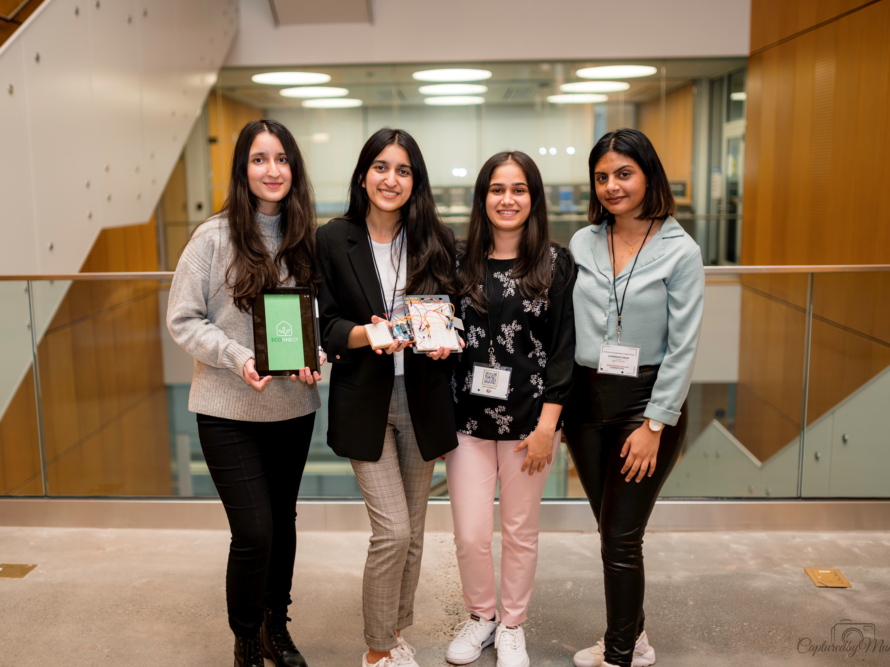
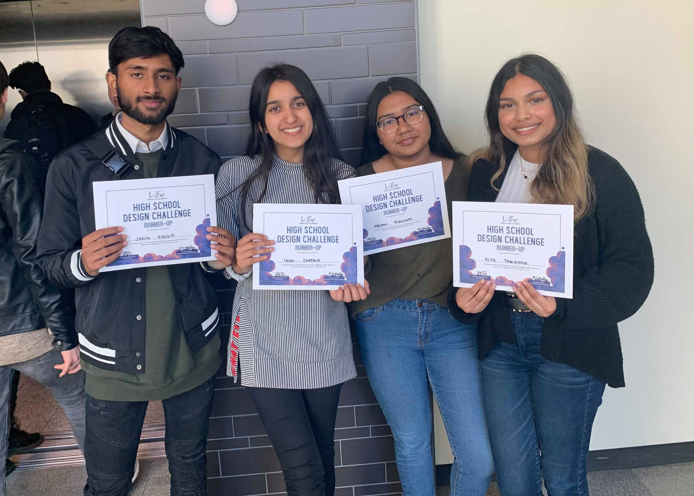
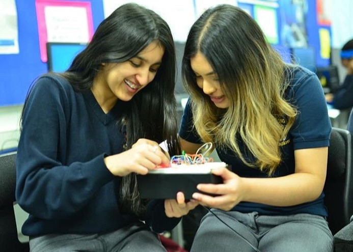
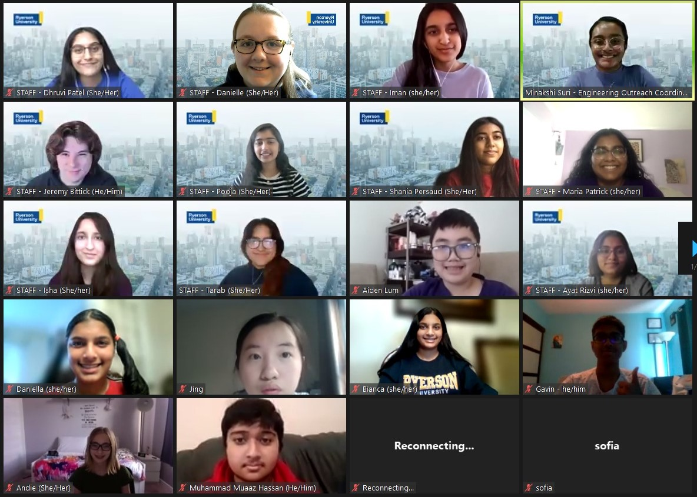

/experience
currently I am:
- Fostering an uplifting and safe networking space that empowers Women in Engineering as the mentorship director at Ryerson WiE 👧
- Hosting technical workshops and competitions to bridge the gap between students and skills required in the computer science/engineering industry as Vice President Operations of IEEE Computer Society Ryerson Chapter 💻
- Coordinating fundraisers, seminars, and monthly events to improve well-being of 4500+ engineering students in the Ryerson Engineering Student Society 🧠
previously:
- Worked with nonprofit client Upmost Foundation on a mobile application to raise donations for wildlife rescue operations in Africa as the front-end developer at Develop for Good 🦏
- Developed and optimized an eCommerce site for ethical fashion, Shopwise, by researching UX/UI strategies and implementing tests on new website design 🛍️
- Secured a $5000 grant via ArtReach to run smART (Self-Care and Mixed Media ART), a six-week community art program that combines the importance of self-care and self-expression through mixed media journaling 🎨
favourite moments:


1st Place (Innovation Design Category) at Ryerson Engineering Competition

2nd Place of Design Challenge @ UofT

Cofounder of Girls Tech and Connect Club

Ambassador of Go ENG event in partnership with the Ontario Network of Women in Engineering
Member of the HALLWAY Heroes Expansion project
.png)